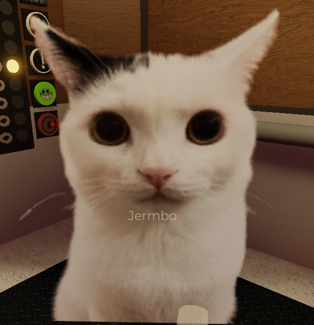

HONORARY MENTIONS
click on character names to be redirected to fan site for more information!
Jermbo!
he's the cat npc that Buck is based on, and has a rare chance (1/500) of entering the elevator on the "hole in the wall" floor.

photo from my personal experience ^^
Crem
vendor at the ice cream store the elevator has a chance of stopping at. Crem is a character from the creator (yeuc_c's) old game, "".
Spud
was originally a camp counselor at camp two stud befpre being abducted by aliens and transfigured into a (). He wears a bucket as a hat, and props himself up by his arms because he has no legs. You can find more Spud lore on the regretevator wiki, or whilst playing on the level in question and finding pictures of his old days as a counselor scattered around.
I used to blow this guy up A LOT until I read more into his lore and decided to empathize with his situation rather than taking advantage of it, and now buy accessories for him that help him not blow up when people harass him! He's alredy gone through enough. I just want him to live in peace ^^
Pilby
a socially anxious caterpillar whose mom was abducted into an alternate dimension, suffering from low self-esteem as a result. He enters the elevator on the "WHEEL OF" floor when the spinner lands on anything other than "reroll."
also, I got some pilby lore on a floppy recently and he may have applied for a job working on "WHEEL OF?" The floppy contains past rejections from other positions he applied for, poor pilby :'0L
BACK TO FAVORITES>> |
VIEW ALL>>